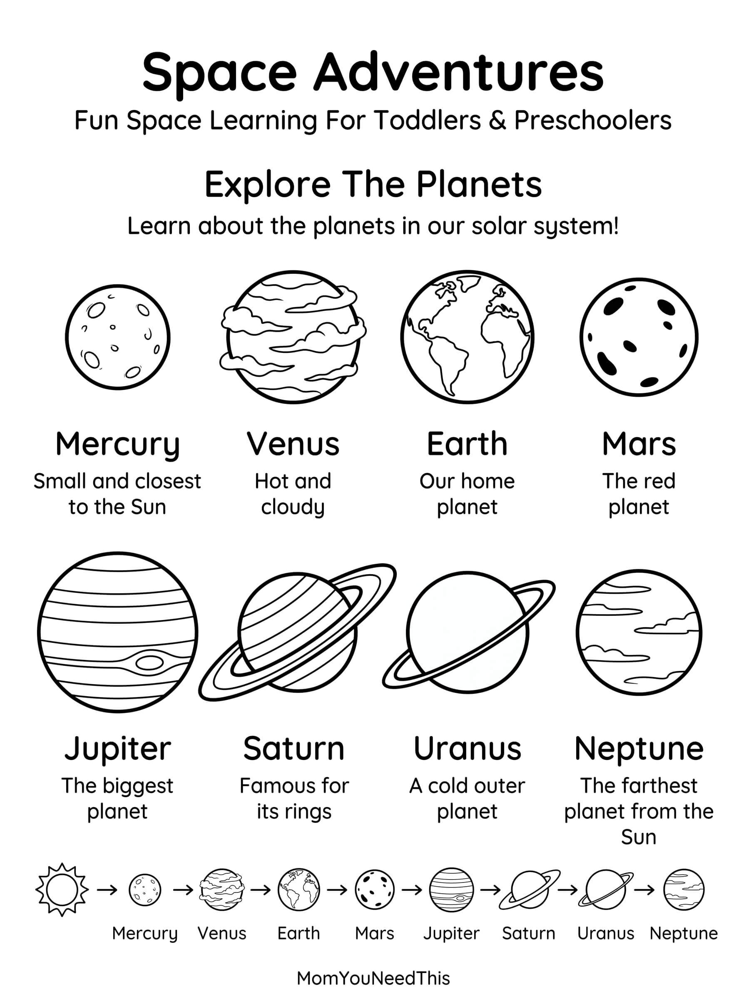

Space & Planets Free Printable Space & Planets Chart For Kids
This free printable space planets gives toddlers and preschoolers a fun, no-prep way to learn through hands-on play. Print the pages and learn through play in minutes.
🌎 Explore The Solar System
Use the printable to help your child learn the names of the planets, discover where Earth fits in the solar system, and start conversations about space and our universe.
Free Space & Planets Printable


How To Use This Printable
- Download and print the activity pages on letter-size paper.
- Look them over together and talk about what your child sees.
- Do the activity side by side the first time, then let them try solo.
- Print fresh copies anytime — repetition builds skills and confidence.
Why Learn About Space & Planets?
Learning about space encourages curiosity and helps children build early science vocabulary while discovering more about the world beyond Earth. It can also inspire questions, observation, and imaginative learning.
🎁 Keep Exploring Free Learning Activities
Discover more printable activities, toddler resources, and learning ideas created for busy parents.
🎁 View All Free Resources❓ Space Planets FAQ
Is this space planets printable really free?
Yes — this space planets printable is 100% free to download and print at home. No signup and no payment needed. Just tap the download button and print as many copies as you like.
What ages is this printable best for?
It is made for toddlers and preschoolers. Little ones can enjoy it with a grown-up’s help, while older preschoolers can work on it more independently.
What supplies do we need?
Just the printed page plus crayons or markers. Most activities need nothing more than that.
🔗 More Free Printables You’ll Love
- Free Alphabet Coloring Pages Free printable alphabet coloring pages for little learners.
- Free Space Coloring Pages Free printable space coloring pages for little learners.
- Free Space Learning Pages Free printable space learning pages for little learners.
- Free Letter A Formation Practice Free printable letter a formation practice for little learners.